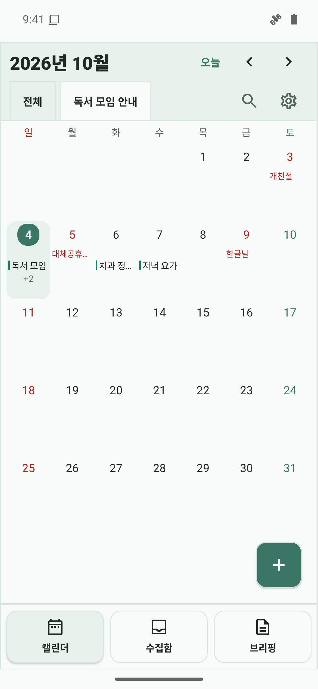

학교 안내 가져오기
가정통신문을 사진으로, 선생님·학부모 메시지를 붙여넣기나 공유로 가져오세요. 카카오톡 수집함의 원문도 직접 고를 수 있어요.
아이들 학교 일정을 챙기는 Android 앱
가정통신문, 학부모 메시지, 학교 행사 안내.
아이들 일정과 준비물을 한곳에 담고,
바쁜 아침에 챙길 일을 줄여보세요.

학교 안내에서 일정 정리
선택하는 AI 방식
확인한 뒤 직접 저장
기기 안의 아이들 일정
보호자의 작은 수고를 덜어주는 흐름
행사 날짜, 모이는 시각, 챙겨야 할 준비물.
안내를 다시 옮겨 적는 시간을 줄이고,
보호자가 확인한 뒤 저장해요.
가정통신문을 사진으로, 선생님·학부모 메시지를 붙여넣기나 공유로 가져오세요. 카카오톡 수집함의 원문도 직접 고를 수 있어요.
내부 AI 모델 또는 내 ChatGPT로 행사 제목, 날짜, 시각, 장소와 안내에 적힌 준비물을 정리해요. 여러 학교 일정은 후보로 나눠 확인합니다.
우리 아이가 참여할 행사인지 살펴보고 날짜와 시간을 확인하세요. 내용을 수정하고 필요한 후보만 고를 수 있어요.
직접 저장을 눌러 캘린더에 담아요. 오늘 챙길 준비물을 체크하고 이번 주 아이들 일정을 살펴보세요.
SIGN IN WITH CHATGPT
가정통신문 한 장, 선생님 메시지 한 줄.
행사 날짜와 준비물을 정리해
아이의 학교 가는 날을 함께 준비합니다.
앱에서 보호자의 ChatGPT 계정을 연결하고, 직접 선택한 학교 안내문 사진과 메시지로 일정 초안을 채우는 경험을 준비하고 있습니다. 사진은 이미지 그대로, 글은 원문 그대로 전달합니다.
보호자 계정으로 연결하는 익숙한 로그인
학교 안내 속 행사 일정과 원문 준비물 정리
필요할 때만 요청하는 학교 행사 준비물 추천
시스템 브라우저에서 로그인하고,
앱의 사용 권한을 확인합니다.
일정현장체험학습
시각오전 9시
준비물도시락 · 물병
AI는 초안을, 확인과 저장은 보호자가.
현재 개발 중이며, OpenAI 연동 승인과 실계정·실기기 검증을 준비하고 있습니다. 계정 로그인과 ChatGPT 플랜 기반 AI 사용은 각각 필요한 권한을 따릅니다. 지원 구독·앱 권한·사용량 한도가 적용되며, 요청 시 구독 사용량이 차감될 수 있습니다.
학교생활의 작은 준비까지
설명용 예시 데이터 · 눌러서 크게 보기
학교 일정을 챙길 때 사용하는 캘린더, 체크리스트, 공유 카드와 위젯을 실제 화면으로 만나보세요.
30개 화면 둘러보기보호자에게 편한 방식으로
기기 안의 내부 AI 모델,
내 ChatGPT 연결, 직접 입력까지.
익숙한 방식으로 챙길 수 있어요.
내부 AI 모델은 선택한 안내를 기기에서 분석하며 원문을 외부로 보내지 않아요. ChatGPT를 선택하면 고른 사진과 글을 OpenAI로 전달하고, 최초 연결 전에 전송과 사용량을 안내합니다.
아이들 일정과 준비물 체크리스트는 앱의 로컬 저장소에서 관리해요. ChatGPT 연결 해제 시 연결 토큰을 삭제합니다.
카카오톡 알림 수집과 필터링 단계에는 AI를 사용하지 않아요. 보호자가 학교 관련 원문을 선택하고 확인한 뒤 저장합니다.
조금 더 궁금한 이야기
운동회, 현장체험학습, 학부모 상담처럼 날짜와 준비물이 있는 학교 안내를 정리할 때 활용할 수 있습니다. 가정통신문 사진이나 선생님·학부모 메시지를 직접 가져와 필요한 일정을 확인하고 저장하세요. 안내문마다 내용이 다르므로 날짜·시간·준비물은 보호자가 다시 확인합니다.
키즈캘린더는 Android에 설치하는 앱입니다. 이 사이트는 제품과 연동 방식을 소개하는 페이지이며, 웹 로그인·AI 분석·일정 저장 기능을 제공하지 않습니다. 현재 개발 중으로 공개 배포 링크는 아직 제공하지 않습니다.
네. 내부 AI 모델을 다운로드하면 ChatGPT 연결·구독 없이 기기에서 일정 초안을 채울 수 있습니다. AI 없이 직접 입력과 기본 자동 채우기로 관리하는 방식도 선택할 수 있습니다.
내부 AI 모델은 약 1GB를 한 번 다운로드한 뒤 인터넷 없이 기기에서 분석합니다. 사진 속 글을 기기에서 읽어 원문에 있는 일정과 준비물만 채우며 추가 준비물 추천은 하지 않습니다. ChatGPT는 선택한 사진 자체나 글을 OpenAI로 보내 분석하고, 별도 버튼으로 추가 준비물 추천을 요청할 수 있습니다. 두 방식 모두 보호자가 확인하고 저장해야 등록됩니다.
ChatGPT 연동에는 지원되는 구독과 승인된 앱 권한이 필요합니다. 현재 공식 안내는 적격 Plus·Pro 사용자의 플랜 이용을 설명하며, 무료 계정 사용을 보장하지 않습니다. 실제 지원 조건과 사용량 한도는 OpenAI 정책과 계정 상태에 따릅니다. 앱 연동은 승인 및 검증 준비 중입니다.
분석 결과는 수정 가능한 초안입니다. 보호자가 아이에게 필요한 일정인지 확인하고 날짜·시간·장소·준비물을 살펴본 뒤 저장해야 등록됩니다. 여러 후보 중 원하는 일정만 선택할 수 있으며, 모호한 정보는 확인이 필요합니다.
사용자가 허용한 Android 알림 접근으로 설정한 채팅방 또는 발신자 이름 조건에 맞는 새 알림 원문을 모읍니다. 전체 대화 기록을 읽지 않으며, 수집·필터 단계에서는 OpenAI에 원문을 보내거나 AI를 실행하지 않습니다.
모두 설명용으로 만든 예시 데이터입니다. 학교 일정 관리에 활용할 수 있는 사용 흐름을 보여주며, 화면에는 일반 예시 일정도 포함됩니다. 실제 앱 화면을 에뮬레이터에서 캡처했으며 ChatGPT 인증이나 사진 분석 성공을 의미하지 않습니다. 공유 카드와 위젯은 앱의 실제 렌더링 코드로 만든 이미지입니다.
학교 가는 날, 조금 덜 기억해도 괜찮게
Android 앱 · 개발 중 · ChatGPT 연동 승인 및 검증 준비